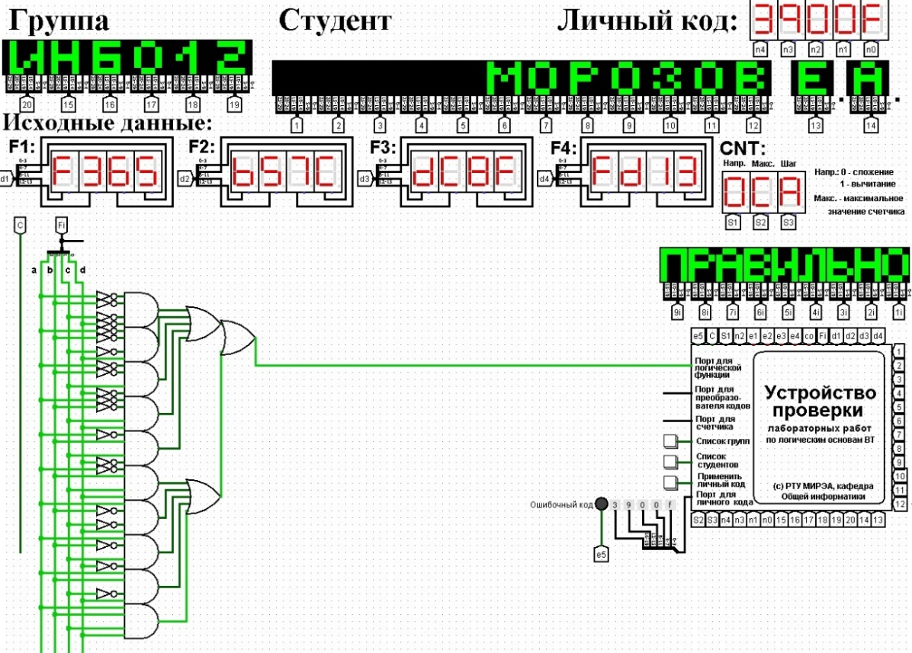
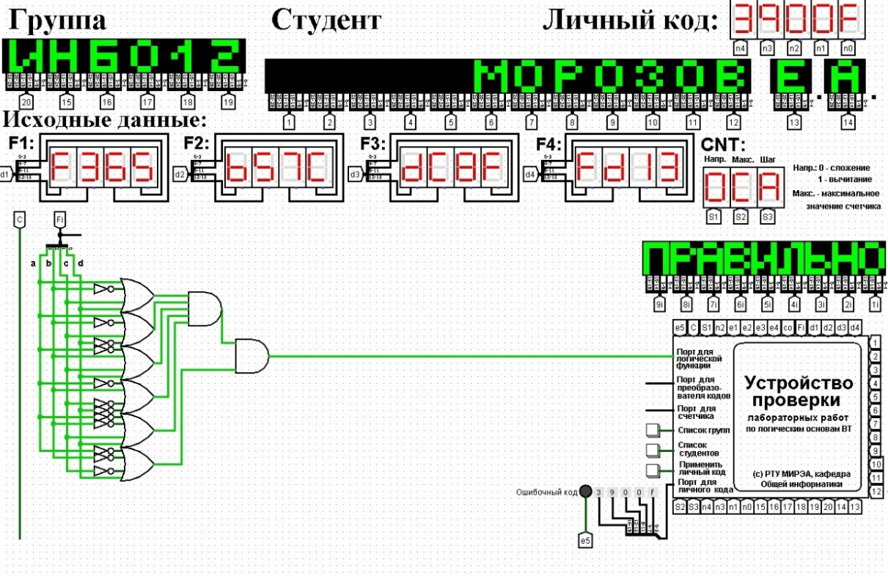

Логическая функция от четырех переменных задана в 16-теричной векторной форме. Восстановить таблицу истинности. Записать формулы СДНФ и СКНФ. Построить комбинационные схемы СДНФ и СКНФ в лабораторном комплексе, используя общий логический базис. Протестировать работу схем и убедиться в их правильности. Подготовить отчет о проделанной работе и защитить ее.
Персональный вариант:
нормальная тема
Логическая функция от четырех переменных задана в 16-теричной векторной форме. Восстановить таблицу истинности. Записать формулы СДНФ и СКНФ.
 